Torii — beyond this point, the land is no longer ordinary human space
- Why vermilion? It is regarded as protective, but the pigment originally contained mercury and also preserved the wood. Practical use and belief came from the same material. Many torii are also unpainted wood or stone.
- The thousand torii of Fushimi Inari Taisha are not decoration. They are donations. People dedicate one after a wish is fulfilled. The back of each pillar bears the donor's name and date. New ones are still being added.
- Torii in the sea at Itsukushima shrine, and torii on mountain summits: when an island or mountain itself is sacred, the torii stands in front of it.
Types of torii: Shinmei and Myojin
Torii fall into two broad families. What to look at: is there a second beam (the shimagi) directly below the top lintel (the kasagi)?
- No shimagi: the Shinmei family. Straight lines and little ornament.
- A shimagi: the Myojin family. The ends of the kasagi often curve upward.
Colour does not decide it. There are vermilion Shinmei torii and unpainted-wood Myojin torii. Nor does the curve: Kasuga torii have straight, level beams, but they have a shimagi, so they belong to the Myojin family.
Shinmei and Myojin torii — how to tell them apart
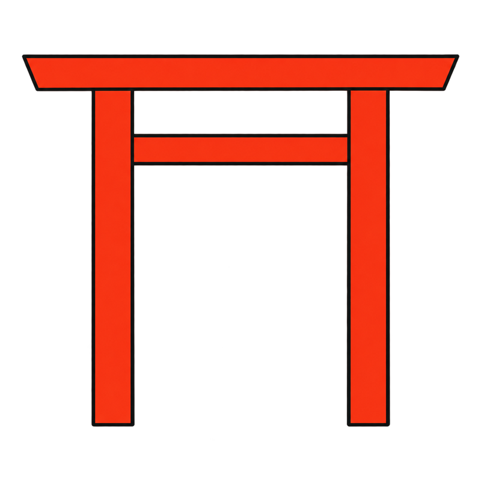
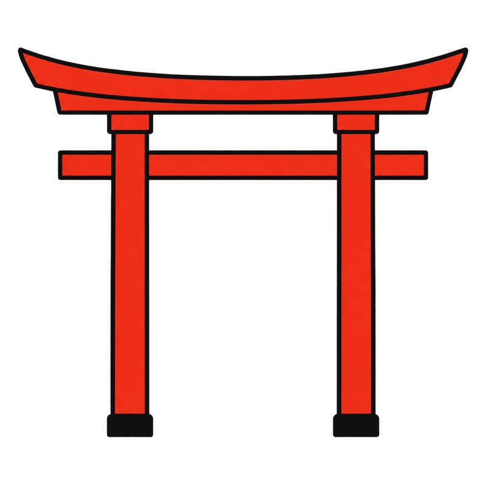
Shinmei: straight beams, no ornament (Ise Jingu's lineage). Myojin: a second beam (shimagi) sits below the top beam, whose ends usually curve upward — most torii nationwide are this type.
Each type is named after a shrine, and every one of those shrines is on this map
Many torii types take their names from the shrine best known for that form, and all of those shrines are on this map. Learn a type, then go and see the shrine it comes from.
Shinmei family
| Type | How to recognise it | Named after (on the map) | Photo |
|---|---|---|---|
| Shinmei torii | How to recognise itJust pillars, a top lintel (kasagi) and a tie beam (nuki): the plainest form. | Named after / example(the name of the family) | |
| Ise torii | How to recognise itA Shinmei type whose kasagi has its upper surface cut at an angle, so its cross-section is a pentagon or similar. | Named after / exampleIse Jingu | 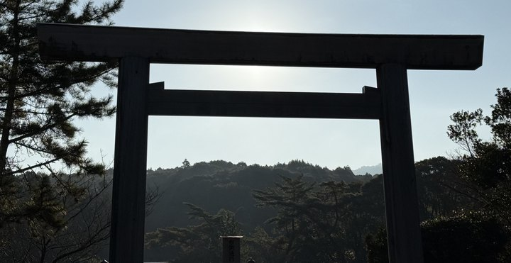 |
| Kashima torii | How to recognise itA Shinmei type in which the lower beam (nuki) runs through the pillars, sticks out on both sides and is fixed with wedges. | Named after / exampleKashima Jingu | 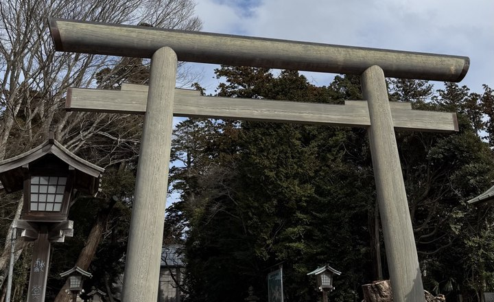 |
Myojin family
| Type | How to recognise it | Named after (on the map) | Photo |
|---|---|---|---|
| Myojin torii | How to recognise itA shimagi below the kasagi, whose ends curve upward. The most common type today; it spread from the Middle Ages onward. | Named after / example(the name of the family) | 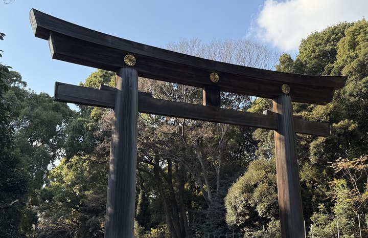 |
| Kasuga torii | How to recognise itKasagi and shimagi are horizontal, with no upward curve. Often vermilion. | Named after / exampleKasuga Taisha | |
| Inari torii | How to recognise itA round seat (daiwa) at the top of each pillar. Often vermilion. | Named after / exampleCommon at Inari shrines (on this map: Fushimi Inari Taisha) | 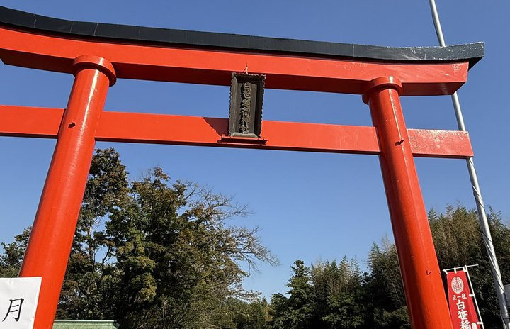 |
| Sanno torii | How to recognise itA triangular, roof-shaped gable (a gassho gable) sits on top of the kasagi. | Named after / exampleHiyoshi Taisha (Shiga); in Tokyo, Hie Jinja | 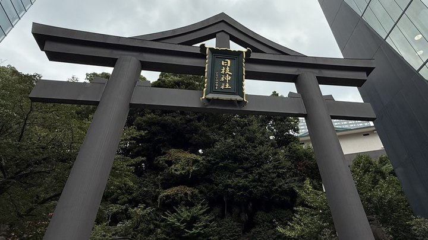 |
| Ryobu torii | How to recognise itSupporting posts (hikae-bashira) stand in front of and behind the pillars, joined to them by tie beams. | Named after / exampleItsukushima Jinja (the great torii in the sea) |
How to tell them apart, step by step
- Is there a second beam under the top lintel? No: Shinmei family (go to step 2). Yes: Myojin family (go to step 3).
- Shinmei family: do the ends of the lower beam stick out past the pillars? Yes: Kashima torii. The top of the kasagi is cut at an angle: Ise torii. Neither: Shinmei torii.
- Myojin family: a triangular roof-shaped gable above the kasagi: Sanno torii. Supporting posts in front of and behind the pillars: Ryobu torii. A round seat at the top of the pillars: Inari torii. Beams that are straight, with no curve: Kasuga torii. None of these: Myojin torii.
Some torii combine features. Name them by the most striking one.
Which type is it? The questions in order
- Yes → Kashima torii
- Top of the kasagi cut at an angle → Ise torii
- Neither → Shinmei torii
- A triangular gable above the kasagi → Sanno torii
- Supporting posts beside the pillars → Ryobu torii
- A round seat on the pillar tops → Inari torii
- Straight beams, no curve → Kasuga torii
- None of these → Myojin torii
The eight types, side by side
The numbers match the parts diagram above. The brighter part is what identifies each type.
By material
Material is a separate matter. A type is decided by shape, not by material.
- Wood: the great wooden torii of Kashima Jingu
- Stone: the stone torii of Katori Jingu, and the stone torii of a small shrine in the grounds of Kanda Myojin
- Bronze: the bronze torii of Toranomon Kotohira-gu, standing between office buildings
- Vermilion: Shirasasa Inari Jinja. For why vermilion, see the section above
Seeing them near Tokyo
- Sanno torii: Hie Jinja (Akasaka)
- Inari torii: Shirasasa Inari Jinja (Hadano)
- Kashima torii: Kashima Jingu (Ibaraki)
- Myojin torii: Meiji Jingu (Harajuku)
After the torii, what is actually worth looking at inside the grounds?
Shrine grounds — built around what cannot be seen
The most important thing in a shrine cannot be seen. The shintai, the sacred object, is kept deep inside the main sanctuary. No one looks at it. Even the Emperor does not see the shintai of Ise Jingu. Once that is clear, the layout of the grounds makes more sense.
- Worship hall and main sanctuary: visitors go no farther than the front of the worship hall. The main sanctuary cannot be entered, and its interior cannot be seen. Look less at the size of the building and more at how many fences surround it.
- Komainu: one often has its mouth open, the other closed, forming the a-un pair. ⚠️They are not always komainu. Inari has foxes, Kasuga Taisha has deer, Hiyoshi Taisha has monkeys. Divine messengers differ by shrine.
- Shimenawa: another boundary marker. The shimenawa at Izumo Taisha weighs 5 tonnes.
- Bells: ringing one is said to announce arrival. There are other explanations, including that the custom is relatively late.
- Sacred trees can be older than the shrine buildings. Buildings can be rebuilt. Trees cannot.
- Ema and omikuji: ema are wooden plaques for writing wishes. An unlucky omikuji is not a problem. It can be tied up and left in the grounds.
A route through the grounds
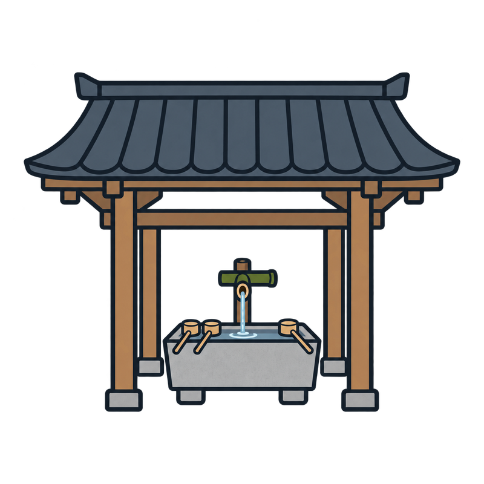
Temizuya (purification)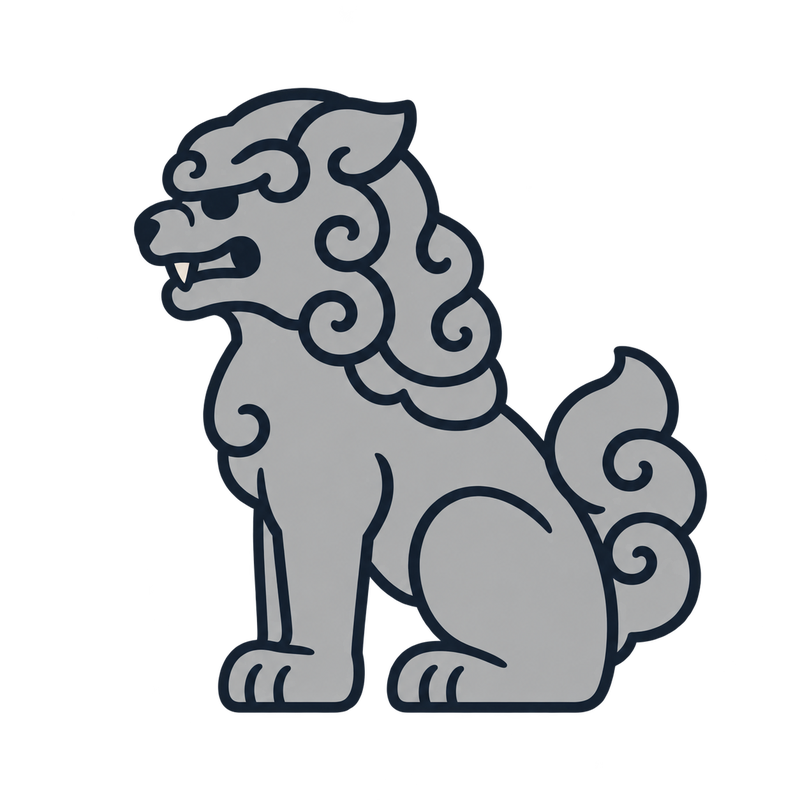
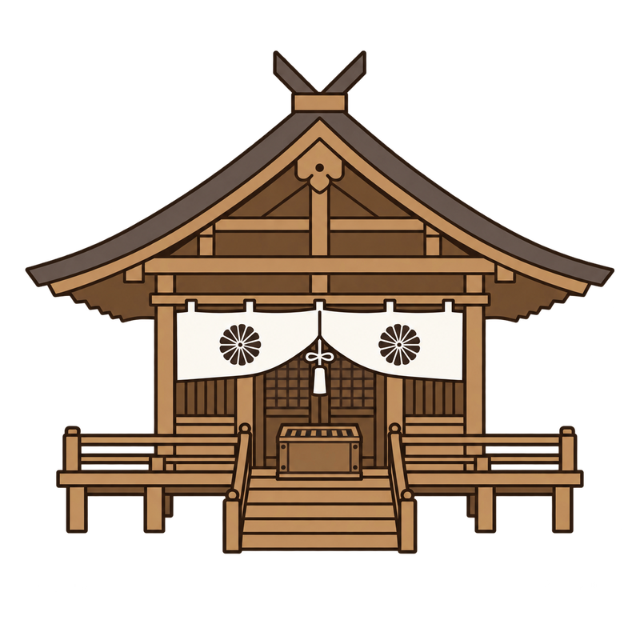
Haiden (worship hall)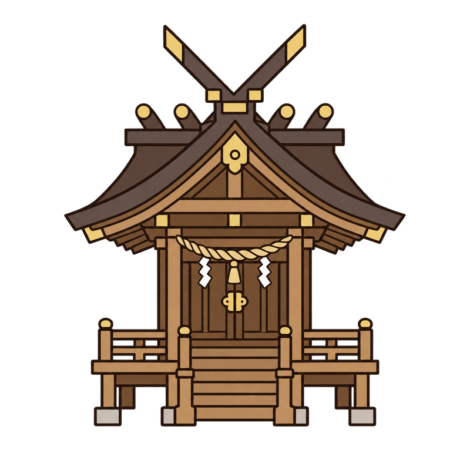
Honden (main hall) — off-limitsThe approach is walked to one side — the centre is the kami's path.
Visitors can go as far as the front of the haiden (dashed line). The honden itself is not open, and often not even visible.